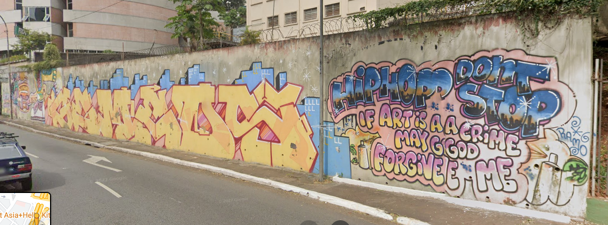

Hip-Hop pelo Estado de SP
Rap
Show e debates sobre o Funk animan a agenda das Fábricas de Cultura. Em maio, a música será a linguagem em destaque na programação das Fábricas de Cultura da Zona Norte, Sul e Diadema.
Ver maisGraffite
Livro faz mapeamento de graffiti no Estado de São Paulo. Com lançamentos em São paulo e Goiânia, journalista e grafiteiro publicam livro sobre trabalhos de artistas e ações coletivas.
Ver maisBreakdance
Governo de SP lança projeto "Breaking no Capão" de olho nos Jogos Olímpicos de Paris. Nova modalidade olímpica vai ganhar Centro de treinamento em área da Linha 5-Lilás;
Ver mais